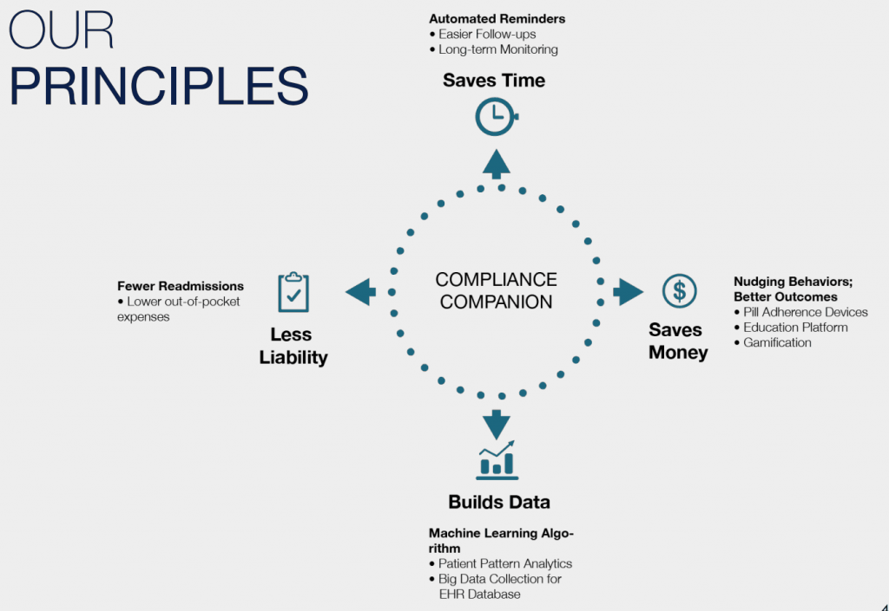
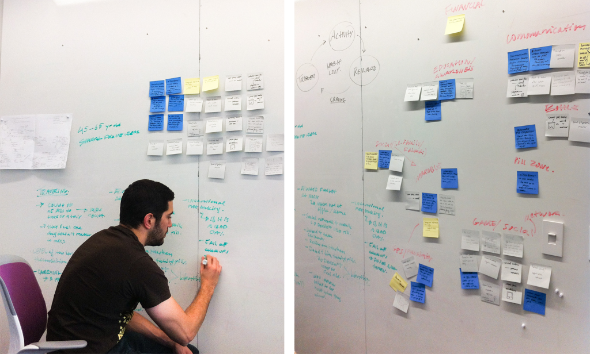

**This is an ongoing project.
For patients taking medication for a chronic condition, like High Blood pressure or diabetes who have trouble taking their medication every time as prescribed, we designed a cloud-based system paired with reminder devices that helps an individual to achieve their medication adherence goals according to their own needs. Unlike devices or reminder systems alone, which only remind a patient when it is time to take their medication, this product reaches out to the user with customized support messages and reminders that help them understand their treatment, stay on-track with their treatment plan, and achieve better health goals and outcomes, decreasing the costs of caring for the user. The solution of helping patients keep up with medication is ultimately more effective and is beneficial to the patient and his family, as well as the insurance company. The customer, who is pharmacy, realizes a two-fold benefit in finances and convenience of managing patient data.
We are helping a Healthcare IT team in CMU to achieve this goal through first defining a plan and conducting user research to understand patient needs and desires. Key insights from the research will help the team and us designers to collaborate and ideate what the core structure of this product service system will be like, and understand all the stakeholders at play and the context to which this will be used and designing a business plan that will stand up against potential competitors.

Target Audience
The current target audience is defined as middle age patients (40-60 year old) engaged in pill-based therapies who need to take their medications independent from medical supervision. With further user research, we will understand what are other underlying frustrations and problems that this demographic is facing that might put a hold on their pill-based therapies. Research will also suggest the best ways to address our target demographic and develop the right system.
Goals
Our goals are to help Healthcare IT design and create a product service system that will enable patients keep a healthy lifestyle by supporting the development of routines and habits allowing them to sustain their pill-based therapies independently. Through user research, ideating, and developing design models, we believe this can be achieved.
Phase 1: User Research & Problem Refinement
Our main focus is gathering qualitative data that will help us understand better patients under pill-based therapies and their respective contexts in order to help them cope with their medication in a more independent manner. We have developed a survey and sent out to charities, hospitals, and churches. We also conducted six face-to-face interviews with patients.
Phase 2: Visioning & Ideation
Data from our research was synthesized and explored in order to gain insights. By conducting workshops with the teams and developing affinity diagrams and design models, we understood our users, context, and our problem statement better. This in turn helped us engage in a brainstorming session and ideate different design concepts.

Phase 3: Design & Evaluation
Once a design is chosen a prototype will be designed in order to be tested and evaluated which will then pave the way to a final design.
Phase 4: Implementation
Final design of the product service system will be implemented and developed. Time will be budgeted for this step so that unexpected delays will not prevent completion of project.
We are now in Phase 2.